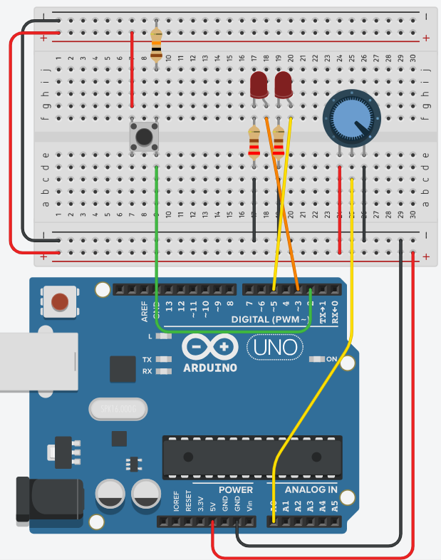

Dit is de opgave voor de praktische voorbeeldtest van het eerste evaluatiemoment. Zo weet je op voorhand hoe moeilijk de echte test wordt.
Tijdens het eerste evaluatiemoment is er ook een theoretische test. Die gaat over de leerinhouden van labo 0, labo 1 en labo 2. Oefen daarop met de theoretische voorbeeldtest.
Sluit 2 leds, een potentiometer en een drukknop aan.
Gebruik deze pinnen, en wijk hier niet van af:
Met de potentiometer regel je de helderheid van de eerste led. De tweede led staat volledig uit.
Door op de knop te drukken (pin 2 wordt HOOG) gaat de eerste led volledig uit. Nu regel je met de potentiometer de knippersnelheid van de tweede led.
Een cyclus is: de led gaat van uit naar aan en dan weer terug naar uit.
Als je opnieuw op de knop drukt kom je terug in situatie 1. De knop wisselt dus tussen situatie 1 en situatie 2.
Om je volledige punten te behalen moet je deze oefening fysiek maken, niet in TinkerCAD.
Welke componenten je daarvoor meebrengt, staat op de pagina Algemene informatie.

const int knopPin = 2;
const int ledPin1 = 3;
const int ledPin2 = 5;
const int potPin = A0;
bool situatie = false;
void setup()
{
pinMode(knopPin, INPUT);
pinMode(ledPin1, OUTPUT);
pinMode(ledPin2, OUTPUT);
pinMode(potPin, INPUT);
}
void loop()
{
// Knop uitlezen en situatie omwisselen
int status = digitalRead(knopPin);
if (status == HIGH)
{
situatie = !situatie; // ! = NOT = INVERTEREN
delay(50); // debouncing: wacht tot het denderen voorbij is
}
if (situatie == false)
{
digitalWrite(ledPin2, LOW);
int potWaarde = analogRead(potPin);
if (potWaarde < 102) // 10%
{
digitalWrite(ledPin1, LOW);
}
else if (potWaarde > 922) // 90%
{
digitalWrite(ledPin1, HIGH);
}
else
{
long ledWaarde = map(potWaarde, 102, 922, 0, 255);
analogWrite(ledPin1, ledWaarde);
}
}
else
{
digitalWrite(ledPin1, LOW);
int potWaarde = analogRead(potPin);
long wachttijd = map(potWaarde, 0, 1023, 1000, 200);
digitalWrite(ledPin2, HIGH);
delay(wachttijd / 2);
digitalWrite(ledPin2, LOW);
delay(wachttijd / 2);
}
}